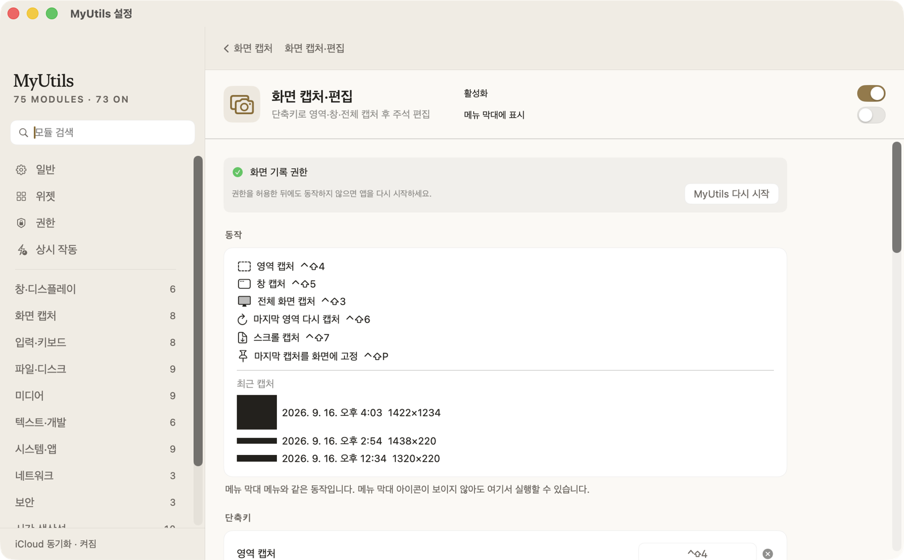
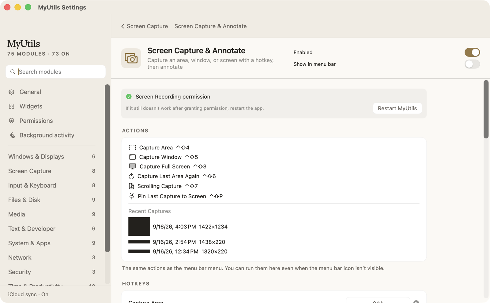
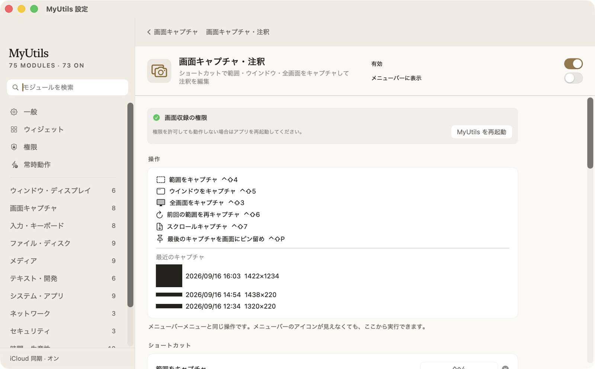

맥에 필요한 도구를
한자리에 모았습니다.The ultimate toolkit
for your Mac.Mac に必要な道具を
ひとつにまとめました。
창 관리, 클립보드, 화면 캡처, 압축, 미디어 변환, 일기장까지. macOS 유틸리티 89가지가 메뉴 막대 아이콘 하나에 들어 있습니다. 외부 라이브러리 없이 Apple 프레임워크만으로 만들었습니다.Window management, clipboard, screen capture, archives, media conversion, a journal. 89 macOS utilities in a single menu bar app, built with Apple frameworks only — no third-party dependencies.ウインドウ管理、クリップボード、画面キャプチャ、圧縮、メディア変換、日記まで。89 種類の macOS ユーティリティがメニューバーのアイコン一つにまとまっています。外部ライブラリを使わず、Apple のフレームワークだけで作りました。



개별 모듈 그 이상의 가치Beyond the individual modules個々のモジュールにとどまらない価値
계정도 서버도 필요 없습니다No account, no serverアカウントもサーバーも不要
모든 데이터는 내 Mac 에만 남습니다. 외부 라이브러리도, 데이터 수집도, 로그인도 없습니다.Everything stays on your Mac. No third-party libraries, no telemetry, no sign-in.データはすべてお使いの Mac の中に残ります。外部ライブラリも、データ収集も、ログインもありません。
iCloud 동기화iCloud synciCloud 同期
메모·일기·클립보드 기록을 iCloud Drive 에 저장해 여러 Mac 에서 이어서 쓸 수 있습니다. 기기마다 따로 두고 싶은 모듈은 개별로 제외할 수 있습니다.Keep notes, journal entries and clipboard history in iCloud Drive so they follow you between Macs. Exclude individual modules that should stay local.メモ・日記・クリップボード履歴を iCloud Drive に保存して、複数の Mac で続きから使えます。端末ごとに分けておきたいモジュールは個別に除外できます。
바탕화면 위젯Desktop widgetsデスクトップウィジェット
디데이·할 일·포모도로·시스템 모니터 등을 바탕화면에 위젯으로 띄워 둡니다. 클릭이 통과하도록 설정하면 바탕화면 아이콘을 가리지 않습니다.Pin D-days, to-dos, a Pomodoro timer and system stats onto your desktop. Make them click-through so they never block your icons.記念日カウント・やることリスト・ポモドーロ・システムモニタなどをデスクトップにウィジェットとして置けます。クリックを通過させる設定にすれば、デスクトップのアイコンを隠しません。
한국어 · English · 日本語Korean · English · 日本語한국어 · English · 日本語
모든 화면이 세 언어로 번역되어 있습니다. 시스템 언어를 따르거나 직접 고를 수 있습니다.Every screen is translated into all three. Follow your system language or pick one yourself.すべての画面が三言語に翻訳されています。システムの言語に合わせることも、自分で選ぶこともできます。
어떤 기능이 들어 있나요What's insideどんな機能が入っているか
분류별로 묶여 있고, 설정에서 모듈마다 따로 켜고 끌 수 있습니다.Grouped by category. Every module can be switched on or off independently.分類ごとにまとまっていて、設定でモジュールごとに個別に切り替えられます。
카드를 클릭하면 자세한 설명을 볼 수 있습니다Click a card for the full descriptionカードをクリックすると詳しい説明が表示されます
창·디스플레이Windows & Displaysウインドウ・ディスプレイ7
화면 캡처Screen Capture画面キャプチャ9
입력·키보드Input & Keyboard入力・キーボード10
파일·디스크Files & Diskファイル・ディスク10
미디어Mediaメディア11
텍스트·개발Text & Developerテキスト・開発8
시스템·앱System & Appsシステム・アプリ10
네트워크Networkネットワーク6
보안Securityセキュリティ4
시간·생산성Time & Productivity時間・生産性10
메뉴 막대Menu Barメニューバー2
기타Everything Elseその他2
실제 화면Screenshots実際の画面
앱에서 그대로 캡처한 화면입니다.Captured directly from the app.アプリの画面をそのまま撮影したものです。
이미지를 클릭하면 크게 볼 수 있습니다Click an image to see it larger画像をクリックすると拡大表示します
설치는 세 단계면 끝납니다Three steps to installインストールは 3 ステップ
DMG 를 열고 앱을 응용 프로그램 폴더로 끌어다 놓습니다.Open the DMG and drag the app into your Applications folder.DMG を開き、アプリをアプリケーションフォルダにドラッグします。
Developer ID 서명과 Apple 공증이 되어 있어 경고 없이 바로 열립니다.It is Developer ID signed and notarized, so it opens without a warning.Developer ID 署名と Apple 公証済みなので、警告なしにそのまま開けます。
메뉴 막대의 격자 아이콘을 누르고, 설정에서 사용할 모듈을 고릅니다.Click the grid icon in the menu bar, then pick your modules in Settings.メニューバーのグリッドアイコンをクリックし、設定で使うモジュールを選びます。
메뉴 막대 아이콘 하나면 충분합니다.One menu bar icon. That's the whole thing.メニューバーのアイコン一つで十分です。
지금 내려받고, 필요한 도구만 켜서 써 보세요.Download it and switch on the tools you actually need.今すぐダウンロードして、必要な道具だけ有効にしてお使いください。